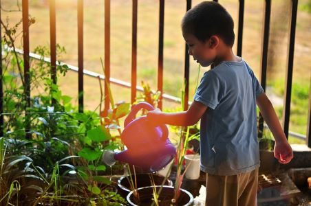

✿ Marché des quatre chemins, tous les dimanches de 7h30 à 13h
Nous vendons une partie nos récoltes à un prix très abordables, pour que tous le monde en profite.
✿ Atelier décoration de citrouille
le mercredi 12 octobre et le samedi 15 octobre de 15h à 17h
Décorez votre citrouille et emportez là !
Venez montrer votre talent en décorant votre citrouille pour Halloween.
Atelier réservé aux enfants à partir de 5 ans accompagnés d’un parent.
Inscription obligatoire

✿ Atelier les “mini jardiniers”, tous les mercredis de 10h à 11h
Tout au long de l’année les enfants peuvent participer à un atelier pédagogique
en découvrant les diverses plantes et créer un herbier.
Atelier réservé aux enfants de 2 à 5 ans accompagnés d’un parent.
Inscription obligatoire
Contactez-nous:
lepotagerdlm@gmail.com
06 50 39 52 58